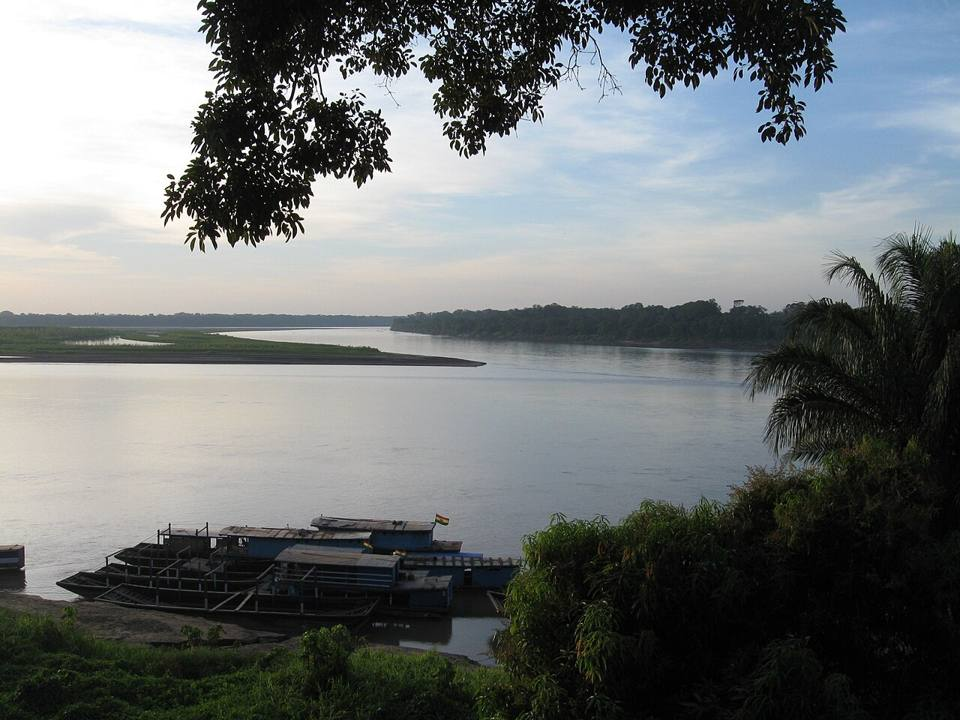
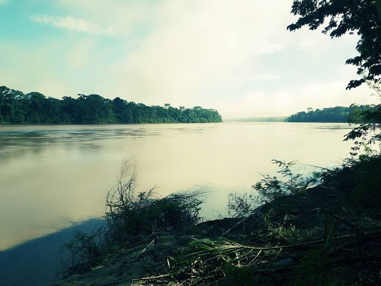
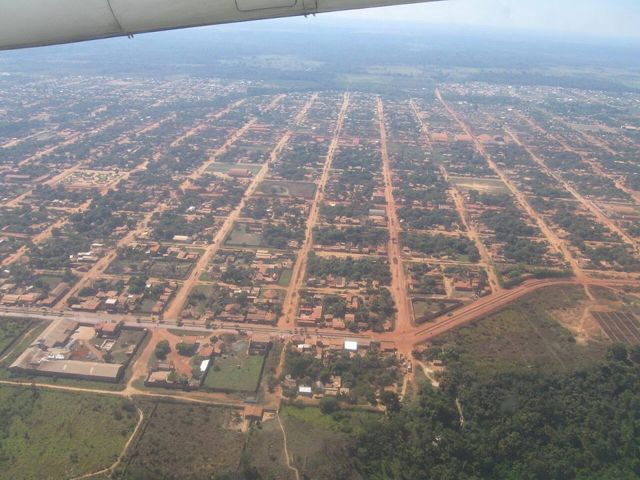
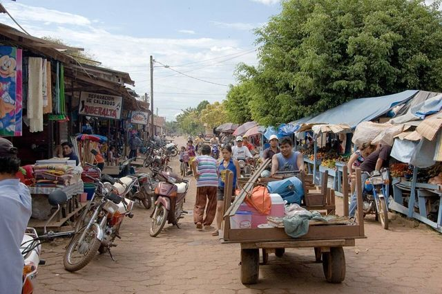
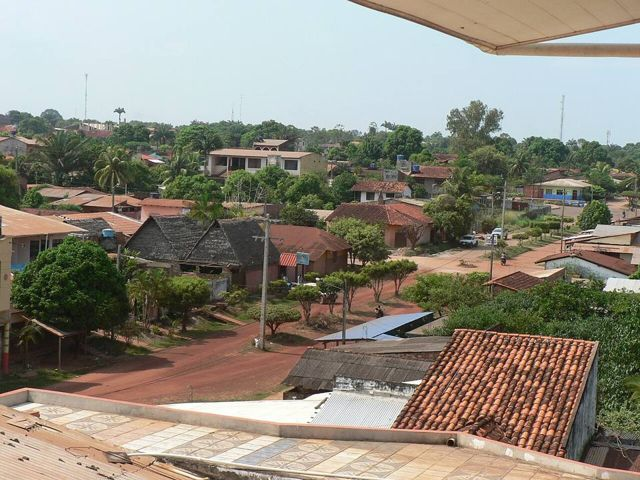
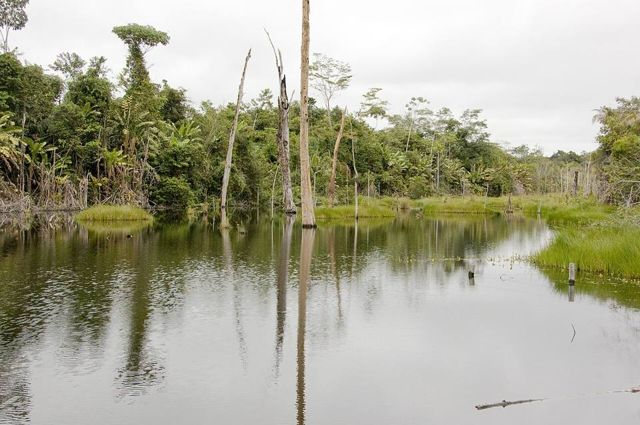

Riberalta
Département de Beni · Villes

Riberalta est la grande ville du nord amazonien, au confluent du río Beni et du río Madre de Dios. On y circule en moto-taxi, on mange du poisson de rivière et on découvre la castaña, la noix du Brésil, dont la ville est la capitale mondiale. Autour, la lagune de Tumichucua et Cachuela Esperanza, ancienne capitale de l'empire du caoutchouc, racontent l'histoire de l'Amazonie.
140 maltitude
1 à 2 jourssur place
À faire
- Lagune de Tumichucua
- Cachuela Esperanza et l'histoire du caoutchouc
- Usines et récolte de la castaña
- Couchers de soleil sur le río Beni
À goûter
- Poisson de rivièreSurubí, pacú ou dorado, grillés au feu de bois ou frits, avec riz, manioc et banane. Délicieux au bord de l'eau, dans les Llanos et en Amazonie.
- MasacoBanane plantain ou manioc écrasés avec du charque ou du fromage. Riche et nourrissant.
- Fruits tropicauxMangues, ananas, papayes, achachairú (petit fruit acidulé) et jus frais partout pour quelques bolivianos.
Conseil. Vols depuis La Paz ou Trinidad. La route est longue et difficile en saison des pluies.
Comment aller à Riberalta
Trinidad Avion · 1 h de vol
Vols BoA ou petites compagnies.
La Paz Avion · 1 h 30 de vol
Vols BoA, pas tous les jours.
Guayaramerín Route (bus, voiture) · 1 h 30
Taxi partagé ou bus, route asphaltée.
Cobija Route (bus, voiture) · 8 à 10 h
Bus ou taxi partagé.
Route en terre, difficile en saison des pluies.
Photos de Riberalta










Autres lieux de la région
 RurrenabaquePorte d'entrée de l'Amazonie bolivienne, au bord du río Beni.
RurrenabaquePorte d'entrée de l'Amazonie bolivienne, au bord du río Beni. Parc national MadidiL'une des zones les plus riches en biodiversité de la planète. Forêt primaire.
Parc national MadidiL'une des zones les plus riches en biodiversité de la planète. Forêt primaire. Pampas du YacumaZones humides : on voit beaucoup d'animaux (caïmans, capybaras, dauphins roses).
Pampas du YacumaZones humides : on voit beaucoup d'animaux (caïmans, capybaras, dauphins roses). Réserve Barba AzulSavanes du Beni, refuge de l'ara à gorge bleue, l'un des perroquets les plus rares du monde.
Réserve Barba AzulSavanes du Beni, refuge de l'ara à gorge bleue, l'un des perroquets les plus rares du monde. Réserve de biosphère du BeniSavanes, forêts et lagunes près de San Borja : une réserve très riche en faune, encore peu visitée.
Réserve de biosphère du BeniSavanes, forêts et lagunes près de San Borja : une réserve très riche en faune, encore peu visitée. Trinidad (Llanos de Moxos)Capitale du Beni, plaines inondables et culture moxeña.
Trinidad (Llanos de Moxos)Capitale du Beni, plaines inondables et culture moxeña. Laguna SuárezUne grande lagune tranquille aux portes de Trinidad, pour se baigner et manger du poisson.
Laguna SuárezUne grande lagune tranquille aux portes de Trinidad, pour se baigner et manger du poisson. San Ignacio de MoxosAncienne mission jésuite des plaines du Beni, célèbre pour l'Ichapekene Piesta (UNESCO).
San Ignacio de MoxosAncienne mission jésuite des plaines du Beni, célèbre pour l'Ichapekene Piesta (UNESCO). CobijaLa capitale du Pando, au bord du río Acre, face au Brésil : porte de l'Amazonie du nord.
CobijaLa capitale du Pando, au bord du río Acre, face au Brésil : porte de l'Amazonie du nord. Porvenir et le río TahuamanuVillage amazonien près de Cobija : balades en bateau sur le Tahuamanu et piscine naturelle.
Porvenir et le río TahuamanuVillage amazonien près de Cobija : balades en bateau sur le Tahuamanu et piscine naturelle. Puerto Rico et la réserve de ManuripiPetite ville au confluent de deux rivières, porte de la réserve amazonienne de Manuripi.
Puerto Rico et la réserve de ManuripiPetite ville au confluent de deux rivières, porte de la réserve amazonienne de Manuripi. GuayaramerínVille frontière sur le río Mamoré, face à la ville brésilienne de Guajará-Mirim.
GuayaramerínVille frontière sur le río Mamoré, face à la ville brésilienne de Guajará-Mirim.